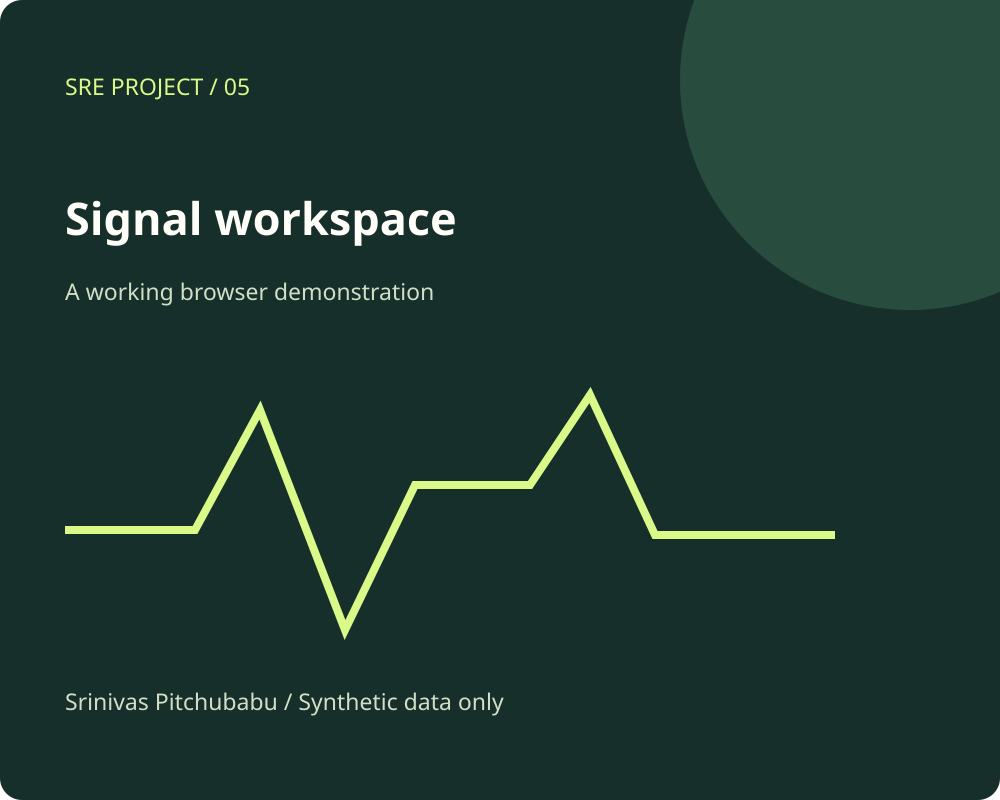

Observability Command Center / Public edition
Bring the evidence together.
Explore a fictional service landscape, switch incident scenarios, and inspect the evidence behind a possible shared cause.
Incident triageService topologyCorrelation

Explore the implementation
A small system you can inspect.
Per-service signal cards
Event filtering and inspection
Explicit correlation limitations
Try this.
Switch to dependency slowdown, filter to checkout, and inspect the shared database signal. Then compare the recovery scenario.
Signals and timelines are scripted teaching examples, not live telemetry. Correlation is an illustrative hypothesis, not an automated root-cause finding. No operational actions are available.